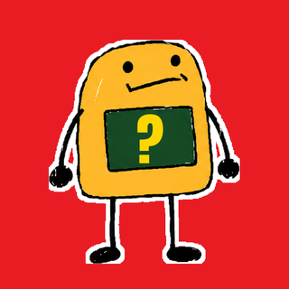

İşin Garibi

Tarihin en tuhaf gerçek hikâyeleri. Kaba çizimler, sağlam kaynaklar.
Uydurma yok. Gerçekse gerçek, efsaneyse efsane diyoruz; her videonun kaynakları açıklamasında.

Tarihin en tuhaf gerçek hikâyeleri. Kaba çizimler, sağlam kaynaklar.
Uydurma yok. Gerçekse gerçek, efsaneyse efsane diyoruz; her videonun kaynakları açıklamasında.